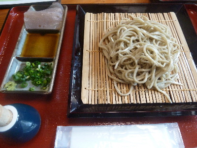

ちしゃの木で十塩そばを食べました。
2018/04/08

十割そばだそうです。
十塩そばは、つゆじゃなくて塩でお蕎麦を食べました。
塩で蕎麦を食べたのは初めてです。
塩をどれくらいかけたらいいかわからないので、ちょっとずつ塩を追加して好みの味にしました。
醤油味ないと、蕎麦もネギもワサビも味がよくわかりますね。
最初ちょっと物足りないって思いましたが、慣れてくると美味しく食べれました。
横に付いてるコンニャクと、つばつゆも美味しかったです。
島根県鹿足郡津和野町駅前通りイ140
2018/04/08

十割そばだそうです。
十塩そばは、つゆじゃなくて塩でお蕎麦を食べました。
塩で蕎麦を食べたのは初めてです。
塩をどれくらいかけたらいいかわからないので、ちょっとずつ塩を追加して好みの味にしました。
醤油味ないと、蕎麦もネギもワサビも味がよくわかりますね。
最初ちょっと物足りないって思いましたが、慣れてくると美味しく食べれました。
横に付いてるコンニャクと、つばつゆも美味しかったです。